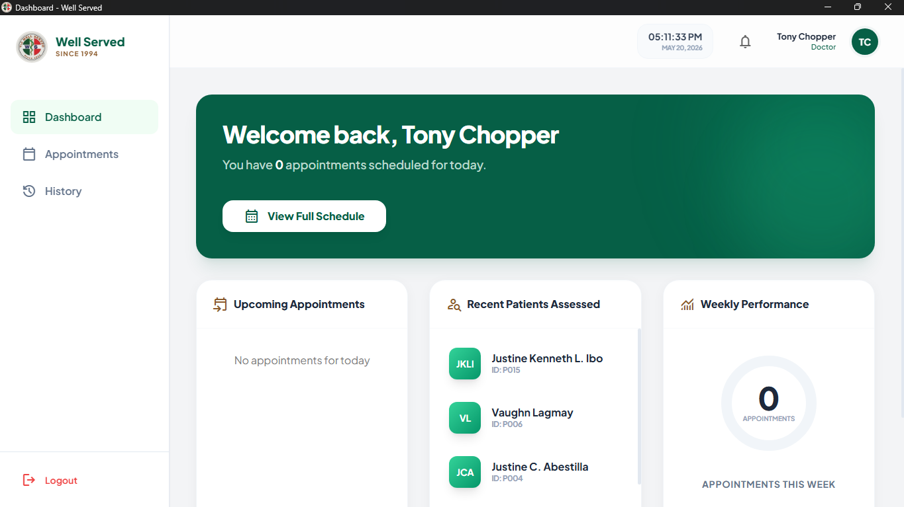
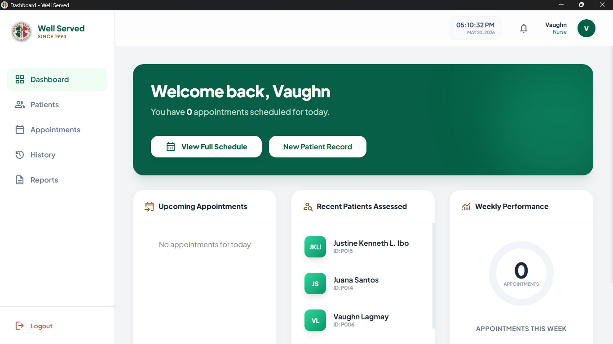
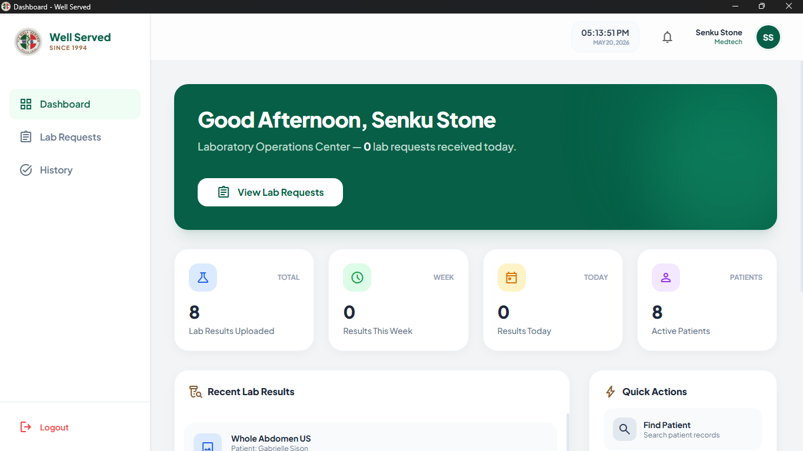
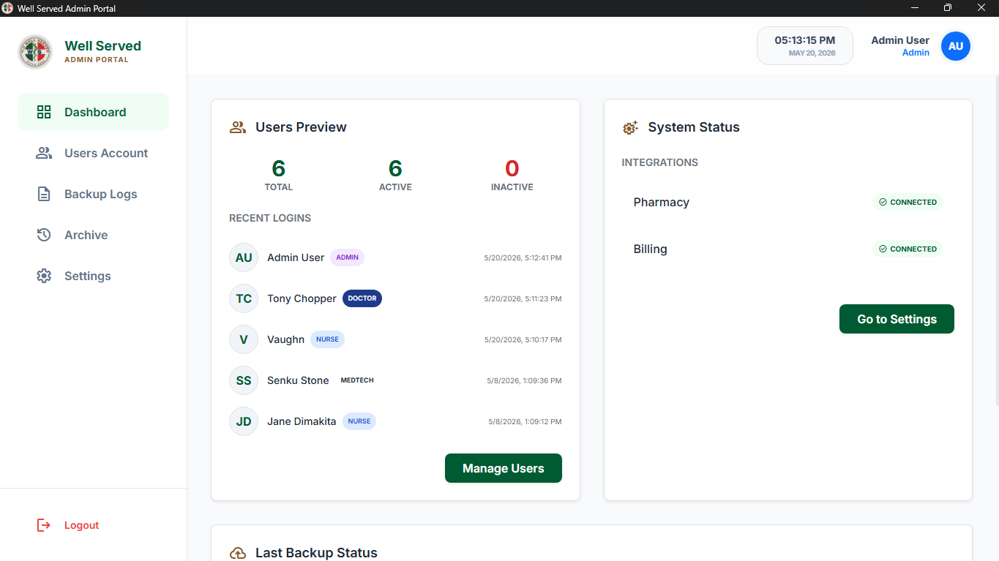

APR TLC Well Served
A comprehensive Appointment Scheduling and Patient Record Management system designed to streamline clinical workflows. APR bridges the gap between patient data management and healthcare delivery.
Video Demonstration
Showing the full end-to-end appointment and prescription workflow.
Module Highlights
Doctor Dashboard
Focused on clinical decision-making and patient care.
- ✓ Access to comprehensive Patient and Appointment history.
- ✓ Digital Prescription Management with automated dosage logs.


Nurse Dashboard
Optimized for patient triage and vitals recording.
- ✓ Patient registration and appointment setting.
- ✓ Queue management for patient consultation rooms.
MedTech Dashboard
Dedicated workspace for laboratory request handling and result generation.
- ✓ Lab Request Queue — view and manage incoming requests ordered by doctors.
- ✓ Result Entry & Encoding with structured forms per test type (CBC, urinalysis, etc.).
- ✓ Lab Report Generation — finalized results auto-linked to the patient's record.


Admin Dashboard
Centralized management of clinic resources and users.
- ✓ User Account Management (Registering Doctors and Nurses).
- ✓ Clinic-wide analytics and Logs for security monitoring.
Technical Deep Dive
The Database
Utilized MongoDB for its flexible schema, allowing us to store varied medical records without rigid table structures.
The Logic
Built with Vanilla JavaScript to handle real-time form validation and secure API calls.
The UI
Utility-first Tailwind CSS allowed for a highly responsive, clean "Clinic-style" interface.